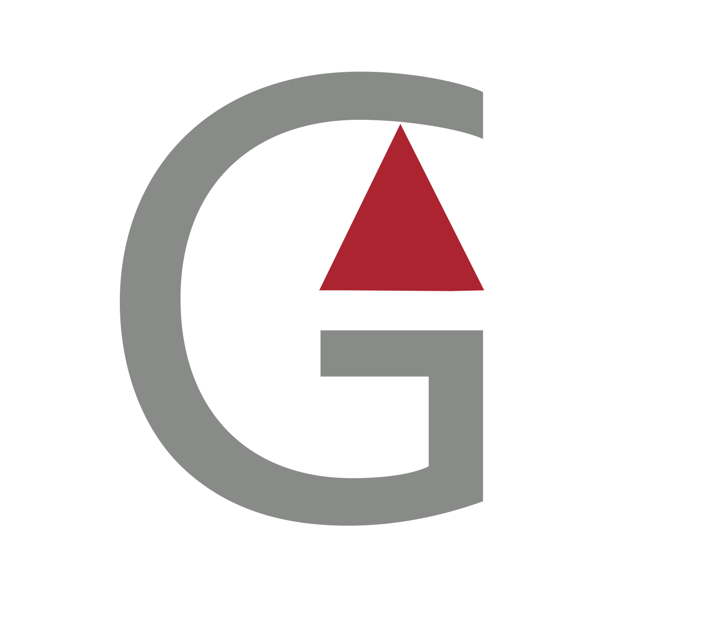

Wat wilt de klant vertellen?
Het is een website dat als portfolio gaat dienen, een beetje zoals een CV, en gaat tonen wat ze allemaal kan doen.
Waarom heeft de klant voor zijn bedrijfsnaam gekozen?
GA advertising0& photo: GA staat voor Garcia Audrey en advertising & photo staat voor haar belangrijke werken, waarvoor ze gestudeerd heeft. Wat haar werk is.
Wat wilt de klant in zijn website zien of hebben?
Haar foto's, haar reclamecampagnes maar ook elke werk dat met kunst te maken heeft.
Moet de website responsive zijn?
Dat zou goed zijn vanuit een esthetisch oogpunt. Maar het is meer de soort website dat je op een pc bekijkt om beter de kwaliteit van haar werken te kunnen zien, het is moeilijk om dit op een kleine scherm te zien.
Heeft de klant al een domeinnaam gereserveerd?
Ja
Eens dat de website gemaakt geweest is, moet er dan vaak iets gewijzigd worden aan de website of niet?
Ja, updates van haar nieuwe werken.
Wat is de huisstijl van de klant? (logo, huisstijl,...)
Is er een logo? Mogen er foto's gemaakt worden op de werkplaats van de klant?
Ja
Heeft de logo een watermark?
Voorlopig nog niet.
Hoe ziet het doelpubliek er uit? Jong/oud, man/vrouw, Nederlanstalig/Franstalig/tweetalig, uit een bepaald geografisch gebied, hoger opgeleid/algemeen,...?
Een beetje van alles, maar ze richt zich meer op het professionele. Haar werk kan internationaal gaan. Daarmee wenst ze ook dat de website in drie talen wordt opgemaakt, namelijk: frans, nederlands en engels. Het is een website dat voornamelijk afbeeldingen bevat en dus weinig tekst.
Heeft de klant een bepaalde stijl voor ogen? Welke kleur, lettertype enz?
Ja, als kleur gebruikt ze de kleuren bordeaux en grijs, en als lettertype gebruikt ze Arial.
Welke producten/diensten wilt de klant voorstellen? Zijn er specifieke producten/diensten die aangeboden zijn belangrijker dan andere?
Het maken van foto's, reclamecampagnes enz. En er zijn geen producten/diensten die belangrijker zijn dan andere.
Wilt de klant teksten aanmaken voor zijn producten/diensten/andere pagina's?
Nee, er is zeer weinig tekst, enkel een biografie over haar parcours.
Kan de klant bepaalde dingen doen maar dat die liever niet doet?
Zeer grote retouches die heel veel tijd nemen.
Terwijl ik bezig ben met het maken van de website, mag ik die online plaatsen zodat u die van bij u thuis kunt bekijken en mee op de hoogte blijven?
"Jazeker!"
Waarom heeft u gekozen voor een eigen website en niet een template vanop het Internet of bijvoorbeeld wix.com?
Om iets professioneels te hebben. Haar werk bestaat niet uit websites te maken, daarom geeft ze dit als opdracht aan mensen zoals mij dit het aan het leren zijn.
Naam klant: Audrey Garcia
Email adres:
Bedrijf: Audrey Garcia advertising & photo